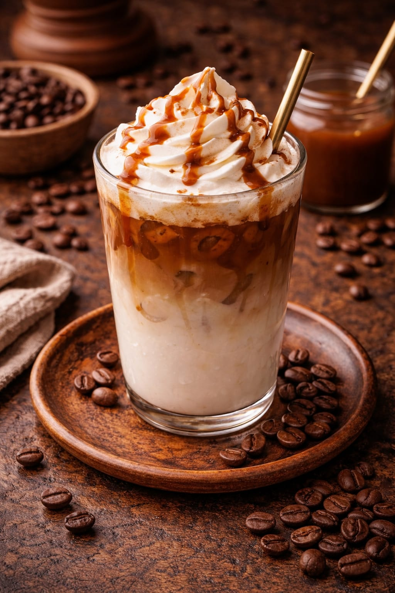

Informações do Café
O macchiato é um café intenso com apenas um toque de leite, mantendo o sabor forte do café, mas suavizado levemente. Ótima escolha pra quem gosta de café marcante.
Ingredientes
- Café Expresso
- Leite Vaporizado
Preparo
O preparo do café macchiato tradicional é simples, consistindo em uma dose de café espresso "manchada" com uma pequena quantidade de leite vaporizado ou espuma de leite. A palavra "macchiato" significa, em italiano, "manchado".
Preço
- R$ 6,50 a unidade (a partir de 3)
- R$ 6,50 a unidade (a partir de 3)
Voltar